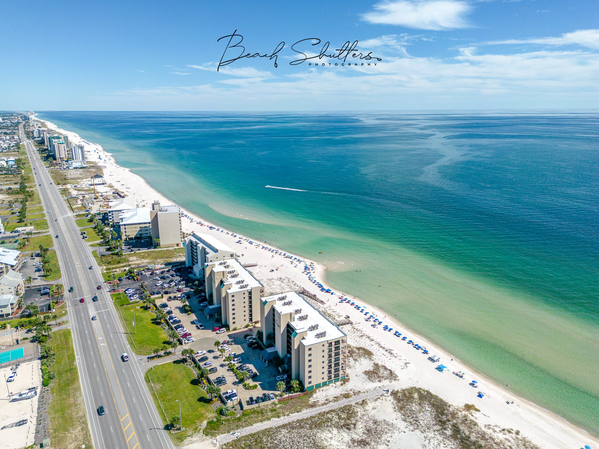
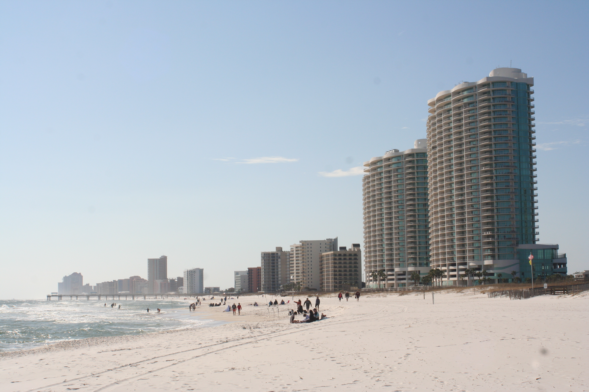

Welcome to Orange Beach, Alabama
Discover the Gem of the Gulf Coast
Introduction
Nestled along Alabama's stunning Gulf Coast, Orange Beach is a premier destination for relaxation, adventure, and natural beauty. With its sugar-white sand beaches, crystal-clear waters, and vibrant local culture, Orange Beach offers something for everyone, from families to couples seeking a romantic getaway.
